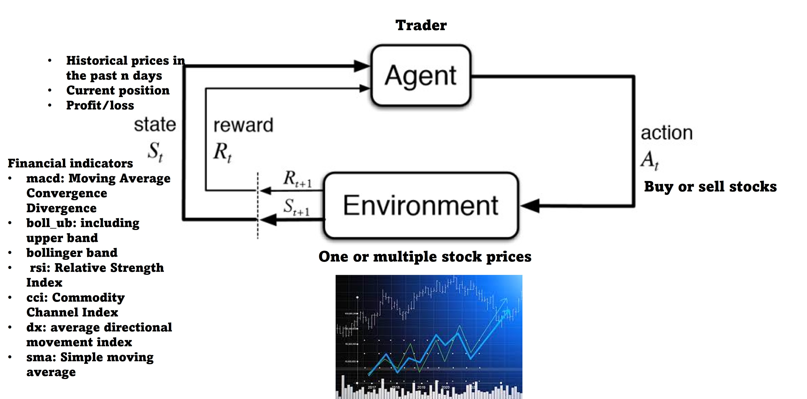

Application of Reinforcement Learning in Financial Markets
Following the success of the Hidden Markov Model (HMM), Reinforcement learning (RL) is becoming another popular tool to analyze financial markets under the concept of the Markov decision process. Reinforcement learning naturally fits the gaming feature of financial markets by constantly interacting with the financial environment and learn good positions to sell and buy stocks.
Key Models
* DQN + LSTM/GRU
* Double DQN + LSTM/GRU
* Dueling DQN + LSTM/GRU
* Dueling Double DQN + LSTM/GRU
